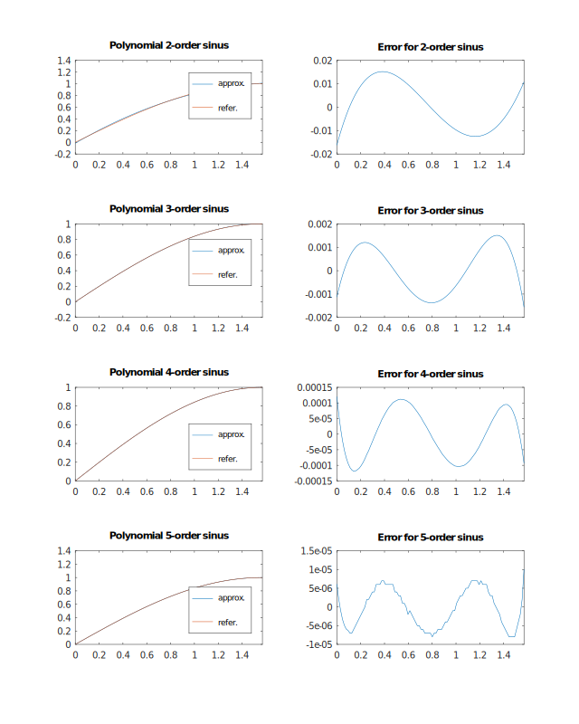
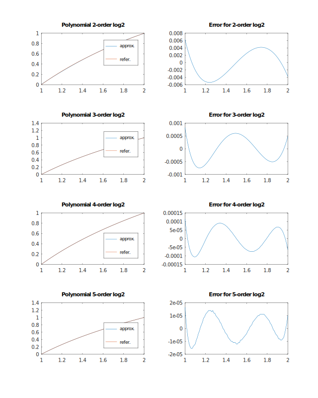
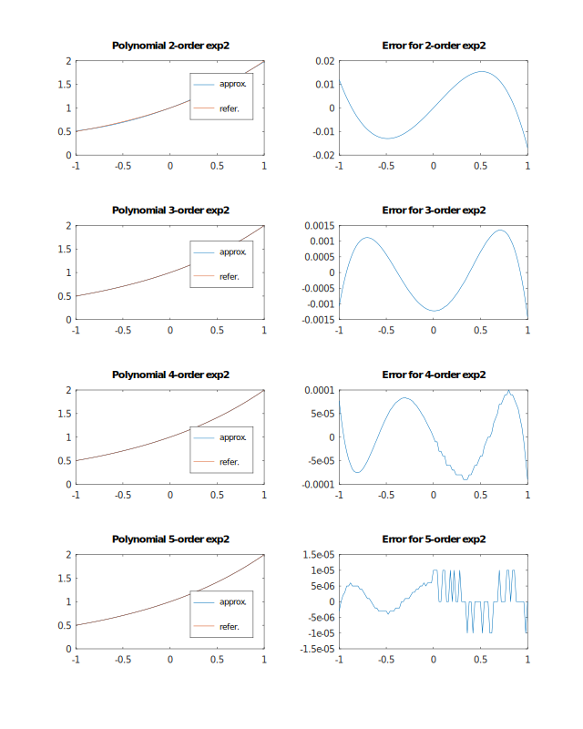
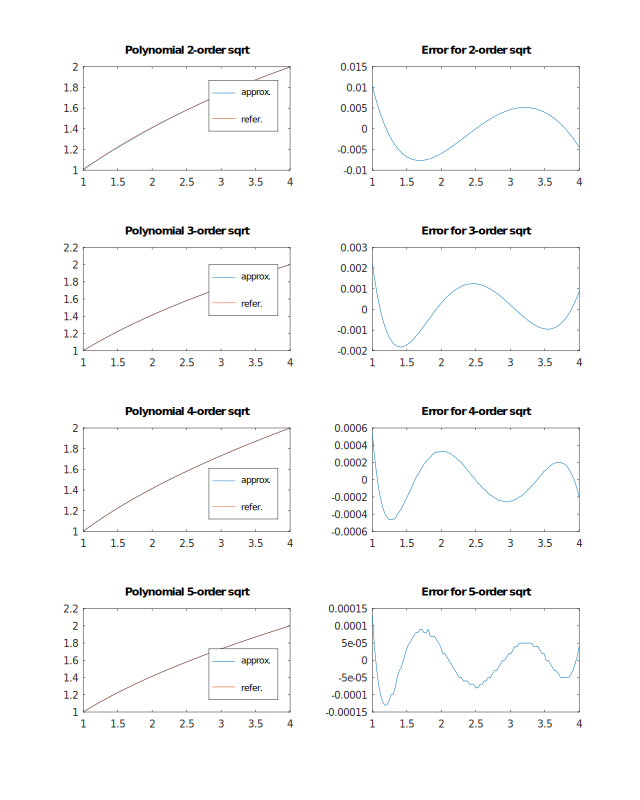

Tag for getting Chebyshev approximation
Generate coefficients for function approximation by fitting Chebyshev polynom in range
Function approximation using Chebyshev polynom coeeficients in range
Function approximation by fitting Chebyshev polynom in range
Generic Chebyshev polynomial approximation
Helpers for Chebyshev polynomial approximation of math functions in given range.
You can either fit function to get polynome coefficients or generate approximation directly.
Examples
Sinus approximation

Logarithm approximation

Exponent approximation

Square root approximation
